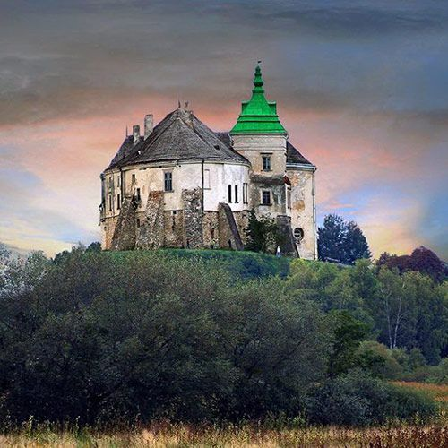

Золота підкова Львівщини (найкращий варіант на день)

Загальна відстань: близько 180–220 км зі Львова
Час: 8–10 годин
- Олеський замок
- Підгорецький замок
- Золочівський замок
Плюси:
Усі об'єкти розташовані практично на одній лінії.
Хороші дороги.
Можна оглянути всі три замки за один день.
Багато кафе та місць для обіду.
Ідеально для: історії, архітектури та фотозйомки.
🚗 Прокласти маршрут у Google Maps